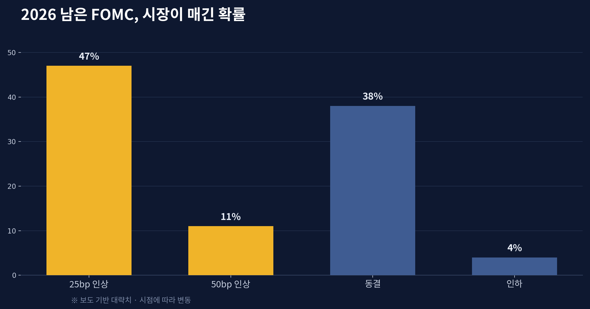
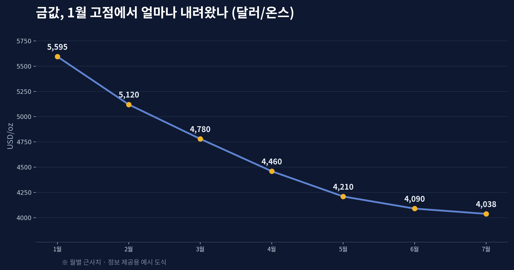
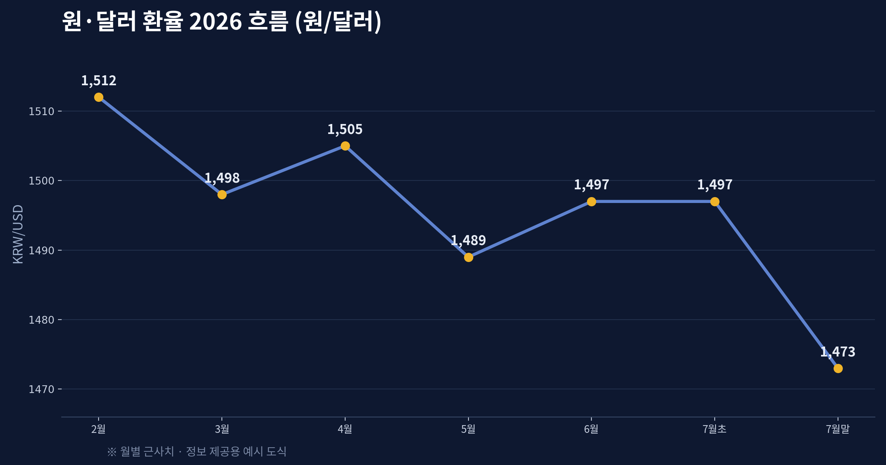
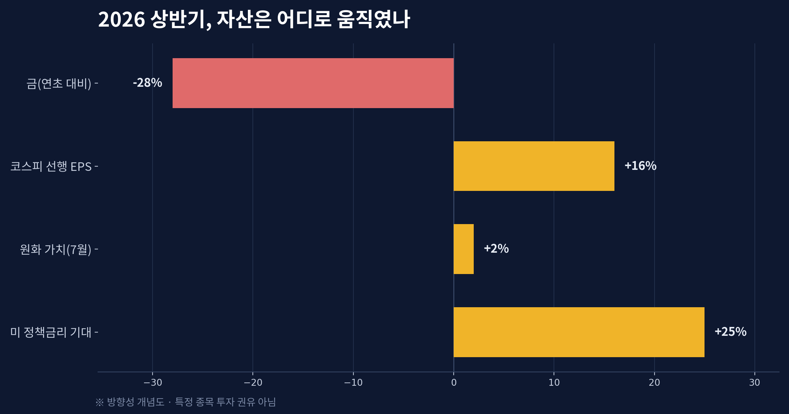

금리 인하는 없다: 인플레이션이 되돌린 2026년, 금·환율·유동성 지도

불과 반년 전만 해도 시장의 대화는 "언제, 몇 번 내릴까"였다. 2026년 벽두에 금은 온스당 5,500달러를 넘겼고, 투자자들은 연준의 연쇄 인하를 기정사실처럼 받아들였다. 그런데 여름의 한복판인 지금, 그 확신은 조용히 뒤집혔다. 물가가 다시 고개를 들면서 '인하'라는 단어는 시장의 입에서 슬그머니 사라졌고, 오히려 '인상'을 셈하는 목소리가 커졌다. 오늘은 이 반전이 왜 일어났는지, 그리고 그것이 금·환율·유동성이라는 세 개의 축을 통해 우리 자산에 어떻게 스며드는지를 하나의 지도처럼 펼쳐보려 한다.
연초의 확신이 뒤집힌 자리
모든 것의 출발점은 물가다. 에너지 가격이 지정학적 긴장 속에서 다시 뛰었고, 그 여파로 미국의 소비자물가는 시장의 기대보다 끈적하게 버텼다. 물가가 목표치 위에서 머무는 한, 중앙은행은 금리를 낮출 명분을 잃는다. 실제로 시장이 남은 FOMC를 두고 매긴 확률은 '인하'가 아니라 '인상' 쪽으로 기울었다. 25bp 인상 가능성이 절반에 가깝고, 더 큰 폭의 인상까지 더하면 긴축 시나리오가 과반을 차지하는 형국이다. 통화정책의 방향이 이렇게 통째로 바뀌면, 그 위에 얹혀 있던 자산 가격의 전제도 함께 흔들린다.

금이 고점에서 28% 내려온 이유
금은 이자를 주지 않는 자산이다. 그래서 금의 최대 경쟁 상대는 늘 '금리'다. 금리가 오르거나, 오를 것이라는 기대가 강해지면 이자를 낳는 채권·예금의 매력이 커지고, 이자가 없는 금의 상대적 매력은 떨어진다. 연초 5,595달러였던 금값이 7월 4,000달러 부근까지, 고점 대비 약 28% 물러선 배경이 바로 이것이다. 인플레이션이 금값을 밀어 올릴 것 같지만, 그 인플레이션이 '금리 인상 기대'로 번역되는 순간 금에는 오히려 역풍이 된다. 시장은 물가 자체보다 물가에 대한 중앙은행의 반응을 먼저 가격에 반영한다.

원·달러가 1470원대로 진정된 배경
국내로 눈을 돌리면 환율의 표정도 달라졌다. 상반기 내내 1,500원 언저리에서 시장을 긴장시키던 원·달러는 7월 들어 1,470원대로 내려앉았다. 미국 금리 기대의 변화, 대형 기업의 해외 상장에 따른 달러 유입 기대, 그리고 한국은행 나름의 방어가 겹치며 달러 롱 심리가 한풀 꺾인 결과다. 다만 이 진정이 곧 '원화 강세의 추세'를 뜻하지는 않는다. 관세·통상 이슈와 가계부채라는 약세 요인이 여전히 반대편에 버티고 있어, 환율은 방향을 확정하지 못한 채 힘겨루기를 이어가는 중이다.

중앙은행은 여전히 금을 산다
가격이 빠졌다고 해서 금에 대한 수요가 사라진 것은 아니라는 점은 짚어둘 만하다. 여러 나라의 중앙은행은 가격 하락과 무관하게 금 보유를 늘려왔고, 한 조사에서는 압도적 다수의 중앙은행이 올해 세계 금 보유가 더 늘어날 것으로 내다봤다. 이것이 시사하는 바는 단순하다. 단기 가격은 금리 기대가 흔들지만, 장기 수요는 '달러 이외의 안전판'을 확보하려는 구조적 동기가 떠받친다. 눈앞의 등락과 밑바닥의 흐름을 구분해서 볼 필요가 여기에 있다.
유동성·지정학·자산배분을 잇는 시각
결국 이 모든 조각은 '유동성'이라는 한 단어로 꿰어진다. 금리가 오르면 시중의 돈은 마르고, 마른 돈은 위험자산에서 안전자산으로, 성장주에서 현금·단기채로 이동한다. 여기에 지정학이 에너지 가격을 통해 물가를 자극하면 긴축의 명분은 더 단단해진다. 개인 투자자가 할 수 있는 일은 시장을 이기려는 예측이 아니라, 이 지형을 이해한 위에서 자신의 배분을 점검하는 것이다. 한쪽에 몰빵된 포지션은 방향이 바뀔 때 가장 크게 다친다.
